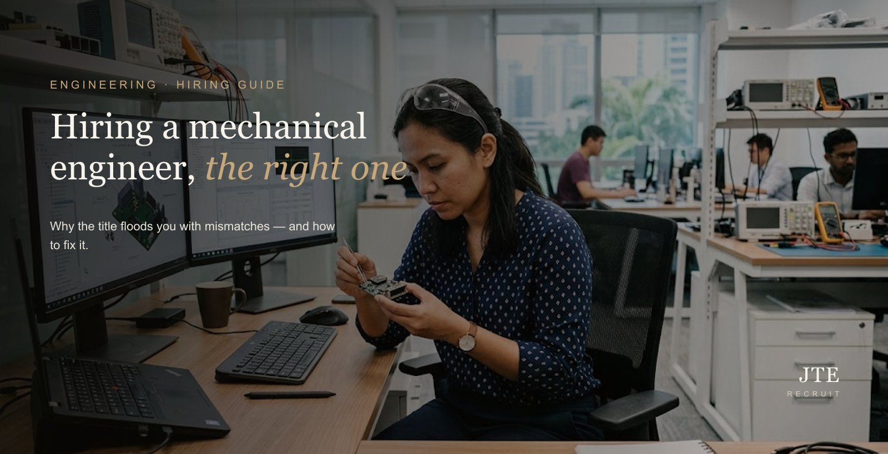
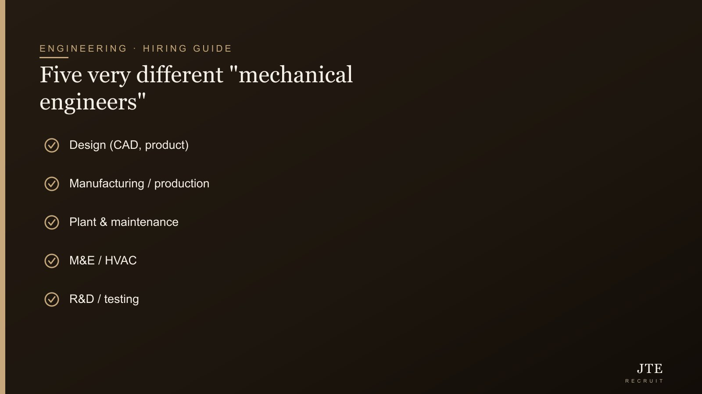
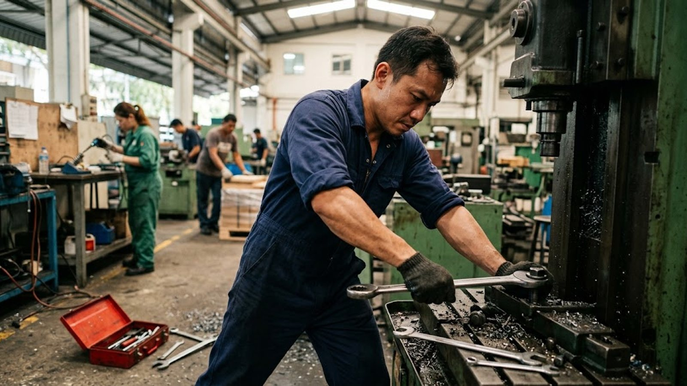

Short answer: it’s almost always the title, not the market. I’ll be honest — when I first started hiring engineers, I’d post for a “mechanical engineer” and drown in CVs that all looked fine but somehow none fit, and I’d lose days sifting the pile. Here’s what I learned: “mechanical engineer” is the broadest title in the whole field — it covers at least five completely different jobs. To hire the right one you decide the single flavour the work actually needs before you write the ad, spec around the real work instead of the title, judge on what you can verify, and get the pile filtered down to three people worth meeting. Let me walk you through the whole thing.
If you’ve advertised for a mechanical engineer and ended up with a hundred CVs that all look fine yet none quite fit, you’re not doing anything wrong. You’ve run into the single most common trap in engineering hiring: the job title tells you almost nothing about what the person can actually do.

Why one job title produces a hundred wrong CVs
“Mechanical engineer” is a category, not a role. Under it sit at least five distinct jobs, and a person trained for one is often no use for another:
- Design — product and part design in CAD (SolidWorks, Creo, AutoCAD). Thinks in tolerances, drawings and revisions; sits mostly at a screen.
- Manufacturing / production — makes a design manufacturable, owns the process on the floor, improves yield and throughput.
- Plant & maintenance — keeps physical equipment and utilities running; hands-on, reactive and preventive. (If this is what you need, see our guide on hiring for maintenance and reliability.)
- M&E / HVAC — mechanical systems in buildings: air-conditioning, ventilation, plumbing, fire.
- R&D / testing — prototypes, analysis (FEA/CFD), validation.
Same two words on every CV; five completely different people behind them. A broad advert invites all of them, and you spend the next three weeks sifting near-misses instead of meeting the right person. The volume feels like a good problem to have — it isn’t. It’s noise.
Step one: decide the flavour before you write a word
Before the advert, answer one question: what must this person actually do in their first six months? Design a new product? Keep a production line running? Size and commission the air-con on a building project? Run failure analysis on returns? The honest answer points straight at the flavour — and everything else in the hire follows from it. Skip this step and no amount of CV-reading later will save you, because you’ll be comparing people who were never doing the same job.
“A flood of wrong CVs isn’t a talent shortage — it’s a briefing problem, and it’s yours to fix.”
Write the spec around the work, not the title
Most job specs are copied from the last one, which was copied from the one before. That’s how you end up with “5 years’ experience, degree in mechanical engineering, proficient in SolidWorks” on a role where the person will actually spend their days on a plant floor with a spanner. Describe the work and the outcomes — “own the preventive maintenance schedule for our packing lines and cut unplanned downtime” reads completely differently from a generic list, and it quietly filters out the wrong flavours before they apply. If you’re not sure how to translate the work into a spec, that’s exactly the kind of thing we help clients do before we source anyone.
Judge on what you can actually verify
When you can’t assess the deep engineering yourself, lean on signals you can read:
- Do their tools match the need? A SolidWorks expert is wasted on a plant that needs someone fluent in a maintenance management system, and vice versa.
- Does the industry fit? Precision electronics, oil & gas, construction and consumer products all shape a mechanical engineer differently.
- Have they built or run one real thing? Ask them to describe a single project simply — what it was, what they did, what went wrong. A designer talks in drawings and revisions; a plant engineer talks in uptime and breakdowns. The vocabulary tells you the flavour.
- Can they explain it to a non-engineer? If they can make it make sense to you, they’ll communicate with the rest of your team too.

The industry factor most employers underrate
Two mechanical engineers with identical titles and years of experience can be worlds apart because of where they did it. Semiconductor and precision manufacturing runs to microns and cleanrooms; oil & gas and process plants run to pressure, safety cases and shutdowns; construction M&E runs to codes, consultants and site coordination. The discipline transfers, but the context often doesn’t — so decide how much industry match you genuinely need, and don’t reject a strong adjacent-industry candidate on reflex.
Budget: the rarer the flavour, the higher the number
Supply of “mechanical engineers” is broad, but the specific flavour you need can be scarce — and scarcity, not the title, sets the price. Underpay for a rare flavour and the role simply stays open. Our engineering salary guide breaks ranges down by type and seniority so you can pitch the offer where it needs to be, and our honest breakdown of what a good engineer actually costs covers the on-costs beyond salary.
When contract or contract-to-perm fits
If the work is a finite project — a new product to design, a plant to commission — you may not need a permanent hire at all. A contractor can do the work and hand it over, and contract-to-perm lets you confirm the fit on real work before committing. Our guide to contract vs permanent engineers walks through which model suits which situation.
How we cut the pile down to three
The narrowing — from a stack of maybes to three people you should actually meet — is the core of what a recruiter does. We define the flavour with you, reach the right sub-type (including the people who aren’t on the job boards), and screen out the near-misses so you spend your time only on genuine fits. That’s the difference between two hundred CVs and three good conversations.
Where the role really sits — and who it reports to
Part of defining the flavour is being clear on where the role sits in your business. Is this a solo hire who’ll be the only mechanical engineer in the building, or one of a team with senior people to learn from? Will they report to a technical head who can direct and check their work, or to a non-technical owner? A solo, unmanaged mechanical role needs someone more experienced and self-directed than the same title inside an established team — and if you can’t offer technical mentoring in-house, that shapes both who you hire and what you should expect to pay. Getting this clear before you advertise stops you interviewing capable people who simply aren’t built to work the way your role needs.
Three interview questions that reveal the real flavour
When you can’t test the deep engineering yourself, three questions do a lot of the work. First: “Walk me through a project you’re proud of — what was it, what did you do, and what went wrong?” The vocabulary alone tells you the flavour, and “what went wrong” separates the people who owned real work from those who watched it happen. Second: “Teach me something technical from your work in plain English.” If they can make it land with a non-engineer, they’ll communicate with the rest of your team. Third: “What would you need in your first month here to be useful?” A strong candidate asks sharp questions back about your equipment, your process and your problems; a weaker one just waits to be told what to do.
What I’d tell a fellow business owner
If you take one thing from this, take this: a flood of wrong CVs isn’t a talent shortage, it’s a briefing problem — and it’s yours to fix, not the market’s. I’ve watched employers stay fixated on “casting a wide net”, keep the ad deliberately vague so more people apply, then wonder why they’re buried in mismatches. Narrow it down instead. A tighter, honest ad that scares off the wrong flavours is doing you a favour — you want fewer, better applicants, not more noise to wade through.
The bottom line
Hiring a mechanical engineer isn’t hard because good ones don’t exist — it’s hard because the title hides five different people and most ads don’t say which one they want. Decide the flavour, describe the real work, judge what you can actually see, and either filter hard yourself or let someone do it for you. Do that, and the same “impossible” role gets a lot more manageable.
Frequently asked questions
What does a mechanical engineer actually do?
It depends entirely on the flavour. Under the one title sit design engineers (CAD and product design), manufacturing/production engineers (making designs buildable and improving yield), plant and maintenance engineers (keeping equipment running), M&E/HVAC engineers (building systems), and R&D/testing engineers. They’re different jobs, so the first step in hiring is deciding which one you actually need.
Why am I getting so many unqualified applicants for a mechanical engineer role?
Because “mechanical engineer” is the broadest title in engineering and a generic advert invites every flavour of it. The fix is to define the specific flavour and write the spec around the actual work, which filters out most mismatches before they apply.
What should a mechanical engineer job description include?
Describe the work and outcomes, not a copied list of requirements: what the person must achieve in the first six months, the tools and industry context that genuinely matter, and the real must-haves versus nice-to-haves. A spec built around the work attracts the right flavour and repels the wrong ones.
Degree or diploma for a mechanical engineer — does it matter?
It depends on the flavour and seniority. Design and R&D roles often lean on a degree; many hands-on plant, maintenance and production roles are done excellently by diploma holders with strong practical experience. Judge on what the person can actually do, not the certificate alone.
How much does a mechanical engineer cost in Singapore?
It varies widely by flavour, industry and seniority, and the salary is only part of the cost once you add employer CPF and benefits. Rather than a single figure, anchor to a current range for the specific role — our engineering salary guide keeps ranges by type and level.
Should I hire a mechanical engineer permanent or on contract?
Permanent suits ongoing, core work; contract suits a finite project or an uncertain need, and contract-to-perm lets you try before you commit. Decide based on how long and how core the work is.
If you’re staring at a stack of near-misses, the fix is almost always the brief, not the market. Tell us what the role must actually do and we’ll define the flavour, reach the right people — including those who aren’t looking — and bring you a shortlist worth your time. More on engineering recruitment at JTE.